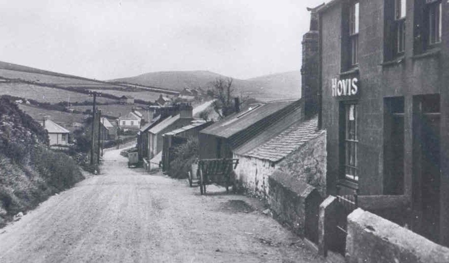

Tanyffordd
Rhes o fythynod bychan oedd Tanyffordd a chartref i lawer o fusnesau bach. Yn 1851, roedd William Williams, crydd yn byw yn Tanyffordd Ganol, Catherine Thomas yn cadw siop. Roedd Owen Thomas, gwneuthurwr esgidiau, hefyd yn byw yma. Yn 1861, roedd masnachwr blawd o’r enw Humphrey Williams yno. Yn 1901, roedd Ellen Roberts yn masnachu da pluog, a John Hughes yn grydd. Yn 1911 roedd gan Owen Roberts siop yma - Siop Owen Bwtsiar. Roedd ei ferch Polly a’i nai Owen yn helpu efo’r busnes.
Llun o 30au/40au. O flaen y becws mae’r drol fara a’r tryc cario dŵr. Siop Owen bwtsiar yn is i lawr.
Ffeithiau'r Cyfrifiad:
Roedd Tanyffordd yn rhes o dai bychan oedd yn cartref i lawer o fusnesau bychan a nifer ohonynt hefyd yn elusendai.